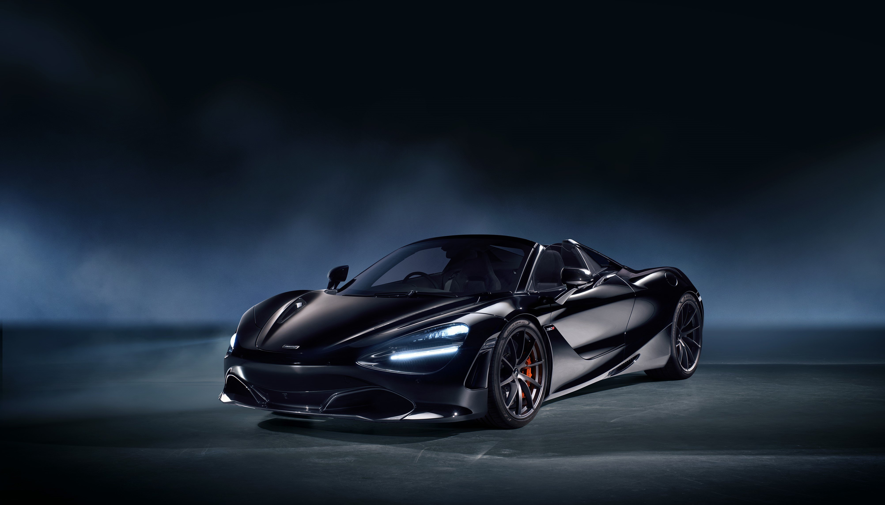
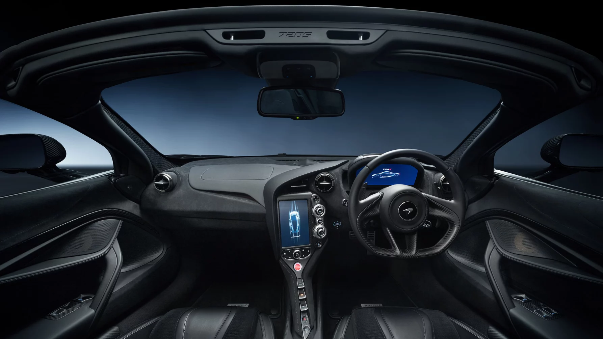
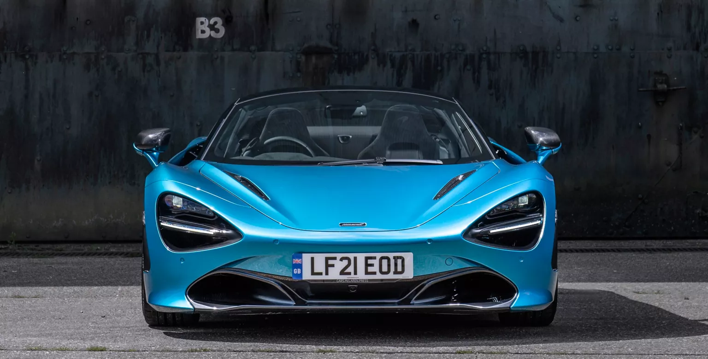

NATURAL DESDE CADA ÁNGULO.
Definido por un diseño contemporáneo. Concebido con un rendimiento feroz

FORMADO POR LA NATURALEZA
Ingenuidad, drama, eficacia. Son las características distintivas de la evolución natural. Diseñando soluciones elegantes e increíbles

LA BELLEZA A PARTIR DE LA SIMPLICIDAD
Potencia, aplomo. Los depredadores más feroces exhiben una elegancia absoluta. Perfeccionados durante generaciones para conseguir el máximo impacto.

LA LLAMADA DE LA SELVA
Conducir el 720 Spyder es una experiencia visceral. El motor V8 Biturbo de 4.0L conecta con el conductor como ninguna otra cosa